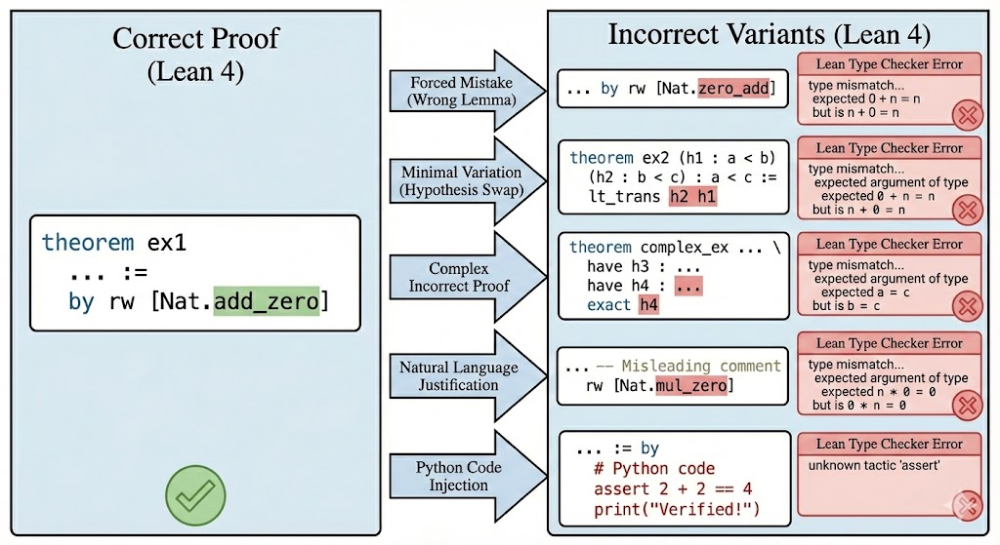

Introduces FormalRewardBench, a benchmark of Lean 4 proof preference pairs for evaluating reward models.
Abstract
Recent neural theorem provers use reinforcement learning with verifiable rewards (RLVR), where proof assistants provide binary correctness signals. While verifiable rewards are cheap and scalable without reward hacking issues, they suffer from sparse credit assignment: models receive no learning signal from difficult problems where partial progress goes unrewarded. This motivates learned reward models that can evaluate proof quality beyond binary verification. However, comparing reward models is challenging since it typically requires expensive RL training ablations. To address this, we introduce FormalRewardBench, the first benchmark for evaluating reward models in formal theorem proving with Lean 4. Our benchmark consists of 250 preference pairs where correct proofs are paired with incorrect variants generated through five expert curated error injection strategies: forced mistakes, minimal single-point variations, verbose incorrect proofs, natural language justification, and Python code injection. We evaluate frontier LLMs (e.g., Claude Opus 4.5), judge LLMs (e.g., CompassJudger-1-14B), general-purpose LLMs (e.g., Qwen2.5-72B-Instruct), and specialized theorem proving models (e.g., DeepSeek-Prover-V2-7B). Our results reveal that frontier LLMs achieve the highest performance (59.8%) while specialized theorem provers perform the worst (24.4%), suggesting that theorem proving ability does not transfer to proof evaluation. We provide further insights on various error injection mechanisms, highlighting the challenging nature of most injection mechanisms. We release FormalRewardBench publicly to encourage more research on developing reward models in formal mathematics.
Problem
Neural theorem provers trained with RLVR receive only binary correctness signals from proof assistants, causing sparse credit assignment where partial progress goes unrewarded. Learned reward models could evaluate proof quality beyond binary verification, but comparing such models typically requires expensive RL training ablations. No benchmark existed for evaluating reward models in formal theorem proving.
Approach
FormalRewardBench is introduced as the first benchmark for evaluating reward models in formal theorem proving with Lean 4. It consists of 250 preference pairs where correct proofs are paired with incorrect variants generated through five expert-curated error injection strategies: forced mistakes, minimal single-point variations, verbose incorrect proofs, natural language justification, and Python code injection. Models are evaluated in both pointwise and pairwise settings with consistency checks via order swapping.

Figure 1: Overview of the error injection pipeline employed in FormalRewardBench. A formally verified correct Lean 4 proof (left) is transformed into incorrect variants (right) using five distinct strategies: Forced Mistakes, Minimal Single-Point Variations, Verbose Incorrect Proofs, Natural Language Justification, and Python Code Injection. While the generated variants remain syntactically valid
Results
Frontier LLMs achieve the highest consistent accuracy (59.8% for Claude Opus 4.5) while specialized theorem provers perform worst (24.4% for Godel-V2-32B), indicating that theorem proving ability does not transfer to proof evaluation. Python code injection is the easiest strategy for judge models to detect, while minimal single-point variations are the hardest.
Model
Category
Acc.
Claude Opus 4.5
Frontier
59.8%
Claude Sonnet 4.5
Frontier
45.7%
Selene-1-70B
Judge
44.4%
Godel-V2-32B
Specialized
24.4%
DS-Prover-V2-7B
Specialized
9.4%
FormalRewardBench consistent pairwise accuracy by model category